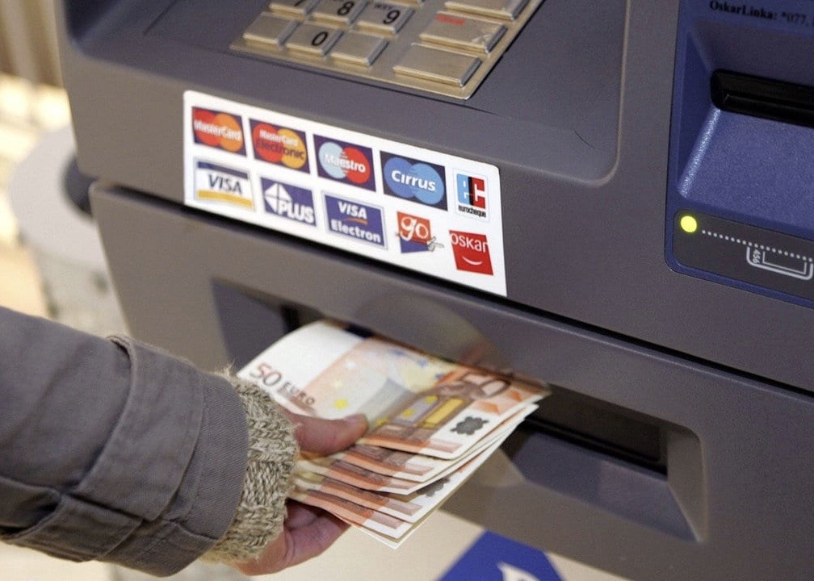

Ulike behov for vern
Det er tre hovedpunkt innan informasjonstryggleik:
- Konfidensialitet, som handlar om at berre dei som treng tilgang til informasjonen skal ha tilgang
- Integritet, det tyder at ein må halde kvaliteten på informasjonen oppe. Ein må ikkje tulle med den.
- Tilgang, som seier at ein skal ha tilgang til informasjonen når ein treng den.
Me ynskjer å verne om alle desse punkta alt etter kva type informasjon det er, og bruken.